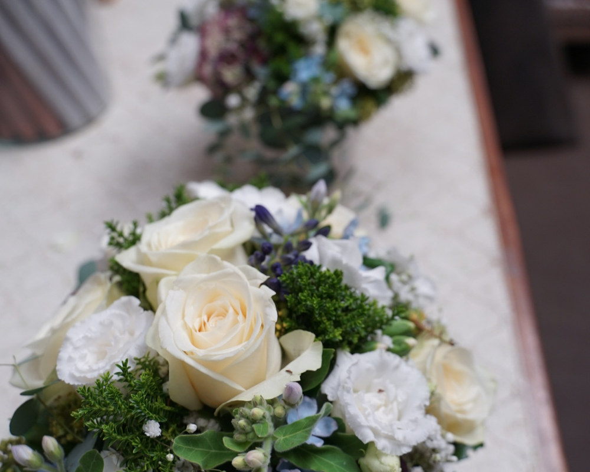

Hochzeitsfloristik für Ihren schönsten Tag
Vom Brautstrauß bis zur kompletten Location – florale Begleitung, die zu Ihnen und Ihrem Fest passt.
Ihre Hochzeit ist einzigartig – und genau so sollte auch der Blumenschmuck sein. Bei der Floralen Schmiede planen wir Ihre Hochzeitsfloristik in Ruhe und stimmen jedes Detail aufeinander ab.
Alles aus einer Hand
- Brautstrauß & Anstecker für das Brautpaar und die Gäste
- Haarschmuck, Armschmuck & Ringkissen
- Kirchen- und Altarschmuck
- Tischdekoration & Raumgestaltung
- Autoschmuck für die Fahrt
So läuft die Planung ab
Damit Sie entspannt feiern können, gehen wir Schritt für Schritt vor:
- 1. Erstgespräch – wir lernen Ihre Wünsche, Farben, Location und Ihr Budget kennen.
- 2. Konzept & Probebindung – auf Wunsch sehen Sie Ihren Brautstrauß vorab.
- 3. Liefertag – alles wird pünktlich und frisch zu Ihrem Fest gebracht.
Für Dettenhausen, Tübingen & Umgebung
Wir gestalten Hochzeiten in Dettenhausen, Tübingen, Walddorfhäslach, Waldenbuch, Nürtingen und der weiteren Umgebung. Sprechen Sie uns früh an – beliebte Termine sind schnell vergeben.
Häufige Fragen
Wie früh sollten wir anfragen?
Je früher, desto besser – idealerweise einige Monate vorher. So sichern wir uns Ihren Termin und haben Zeit für ein stimmiges Konzept.
Bekommen wir den Brautstrauß vorab zu sehen?
Auf Wunsch fertigen wir eine Probebindung an, damit Sie sich Ihren Brautstrauß vor dem großen Tag ansehen können.